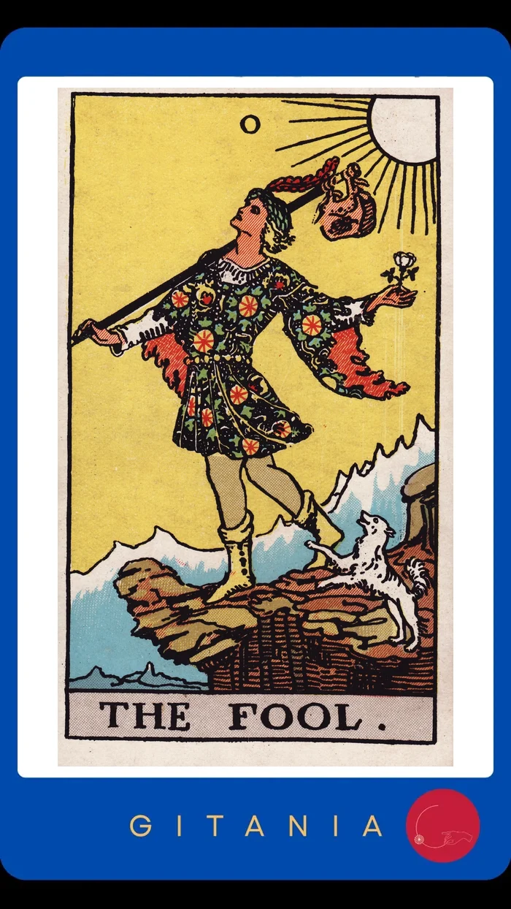

Arte y cultura
Pamela Colman Smith: la artista que convirtió el tarot en escenas
Un joven camina hacia el borde de un risco bajo un cielo amarillo, con una rosa blanca en la mano y un perro que salta a su lado. Esa imagen de El Loco, como casi todas las del tarot que hoy reconocemos de un vistazo, salió de la mano de una mujer cuyo nombre tardó décadas en aparecer junto a sus cartas.

Hay mazos que se miran y mazos que se habitan. El que se publicó en Londres en diciembre de 1909, con dibujos de Pamela Colman Smith y textos de Arthur Edward Waite, es de los segundos: cada carta es un pequeño escenario donde alguien hace algo. Hoy se lo conoce como Rider-Waite-Smith, por su editorial (William Rider & Son), por Waite y por ella, y es el mazo de tarot más usado en el mundo.
En este blog ya recorrimos el tarot como juego de las cortes italianas, como libro egipcio soñado en el siglo XVIII, como jardín habitable y como máquina de relatos en manos de Italo Calvino. Hoy miramos a la artista que le dio su rostro moderno.
Tres orillas
Pamela Colman Smith nació en Londres el 16 de febrero de 1878, hija de padres estadounidenses. Creció entre Manchester, Kingston, en Jamaica, y Nueva York; según contaba ella misma, a los 22 años ya había cruzado el Atlántico veinticinco veces. En 1893, con quince años, entró al Pratt Institute de Brooklyn, donde estudió con Arthur Wesley Dow, un maestro de la composición y el color formado en los principios del diseño japonés. Dejó la escuela en 1897, sin título, y empezó a trabajar como ilustradora.
De Jamaica se llevó las historias de Anansi, la araña astuta del folclor afrocaribeño: en 1899 publicó Annancy Stories y en 1905 Chim-Chim, Folk Stories from Jamaica, y las contaba en voz alta en los salones de Londres. La actriz Ellen Terry, estrella del Lyceum Theatre, la apodó «Pixie», duende, y con ese nombre la llamaron sus amigos.
El escenario como escuela
Con la compañía del Lyceum recorrió Inglaterra trabajando en vestuario y escenografía. En 1908 escribió para la revista estadounidense The Craftsman un texto breve dirigido a estudiantes, «Should the Art Student Think?» (que se traduce más o menos como «¿Debe pensar el estudiante de arte?»). Ahí confiesa: «El escenario me ha enseñado casi todo lo que sé de ropa, de acción y de gestos pictóricos» (traducción propia). Y añade un consejo que vale para cualquiera frente a una imagen: «Aprende de todo, mira todo y, sobre todo, siente todo. Y haz que los demás, cuando miren tu dibujo, también lo sientan» (traducción propia).
Basta extender sus cartas sobre la mesa para ver el teatro: figuras de cuerpo entero sobre un suelo firme, como en un proscenio; cielos planos como telones; gestos que se leen desde la última fila. Una mujer con los ojos vendados sostiene dos espadas cruzadas. Alguien se aleja de ocho copas bajo la luna. No hace falta conocer su significado para sentir que algo está ocurriendo.
Pintar la música
En 1907, Alfred Stieglitz le dedicó la primera exposición que su galería neoyorquina 291 hizo a alguien que no era fotógrafo: 72 acuarelas simbolistas. Según la historiadora del arte Melinda Boyd Parsons, Smith le contó que las pintaba de manera automática mientras escuchaba música, registrando las visiones que le llegaban sin buscarlas; un cruce entre lo que se oye y lo que se ve que se conoce como sinestesia. Una de ellas, Overture. "Egmont" Beethoven (1907), se conserva en el Smithsonian American Art Museum.
En el mismo artículo de The Craftsman lo dice a su manera: «Escucha toda la música que puedas, buena música, porque el sonido y la forma están más unidos de lo que sabemos» (traducción propia). En Gitania esa intuición tiene casa: la Melomancia, nuestro oráculo sonoro, recorre el camino inverso. Haces una pregunta en silencio y una canción llega como punto de partida para reflexionar.
La Golden Dawn y Arthur Edward Waite
En 1901, invitada por el poeta W. B. Yeats, entró al templo Isis-Urania de la Orden Hermética de la Golden Dawn, una sociedad secreta dedicada al estudio de las tradiciones esotéricas, donde los iniciados aprendían las figuras y los sentidos del tarot. Ahí conoció a Arthur Edward Waite, escritor y estudioso del misticismo. Cuando la orden se dividió, en 1903, ella permaneció junto a Waite.
En 1909, Waite le encargó un mazo completo. Él pensaba los símbolos; ella dibujaba. En la edición ilustrada de su guía, The Pictorial Key to the Tarot, Waite escribió que las cartas habían sido «dibujadas y coloreadas por Miss Pamela Colman Smith» y que serían vistas, creía él, como «muy llamativas y hermosas, tanto en su diseño como en su ejecución» (traducción propia). Unas líneas más abajo añade que presentar, «por una vez en tiempos modernos», un mazo que es obra de una artista no requería disculpa alguna (traducción propia).
Ochenta dibujos en unos meses
Smith trabajó en el mazo entre la primavera y el otoño de 1909. El 19 de noviembre le escribió a Stieglitz desde su departamento en el número 84 de York Mansions, en Battersea, Londres: «¡Acabo de terminar un gran trabajo por muy poco dinero! Una serie de diseños para un mazo de cartas de tarot: 80 diseños» (traducción propia). Le prometía enviarle un mazo «impreso a color en litografía» y añadía, con humor, «probablemente muy mal» (traducción propia).
La gran novedad estaba en los arcanos menores. Todo indica que Waite dio indicaciones detalladas sobre todo para los 22 triunfos, y que las escenas de las cartas numeradas salieron en gran parte de la invención de Smith. En los mazos más comunes de la época, un diez de bastos eran diez bastos ordenados en la carta. Con ella, es una persona que carga diez varas hacia una casa a lo lejos, con el cuerpo inclinado por el peso.
Esa idea tenía un antecedente lejano, y Waite lo dejó entrever: escribió que los arcanos menores de su mazo eran los primeros «en tiempos modernos, pero no en todos los tiempos» en llevar imágenes además de los signos de cada número (traducción propia). El antecedente es el tarot Sola Busca, grabado en Italia a finales del siglo XV, el mazo de 78 cartas completo más antiguo que se conserva y el primero con todas sus cartas numeradas ilustradas. En 1907, la familia Busca-Serbelloni donó al British Museum fotografías de sus 78 cartas, y es probable que Smith y Waite las vieran ahí. El tres de espadas, un corazón atravesado por tres espadas, une a ambos mazos a través de cuatro siglos.
De los dibujos originales de Smith no se ha encontrado ninguno.
Un nombre que regresa
Durante décadas, el mazo llevó el nombre de su editorial y el de Waite. Smith recibió un pago único y no cobró regalías. Siguió trabajando: carteles para el Suffrage Atelier, el colectivo de ilustradoras e ilustradores que apoyaba el voto de las mujeres; dibujos para libros de Bram Stoker y de Ellen Terry; años más tarde, una casa en la península de Lizard, en Cornualles. Murió en Bude, Cornualles, en septiembre de 1951, y no se sabe con certeza dónde está su tumba.
Las imágenes, en cambio, siguieron viajando. Desde 1971, U.S. Games Systems las distribuyó por todo el mundo, y cada vez más estudiosos y lectores llaman al mazo Waite-Smith o Rider-Waite-Smith, devolviéndole su firma. En 2019, la escuela donde empezó, el Pratt Institute, le dedicó la exposición Pamela Colman Smith: Life and Work.
Lo que permanece abierto
Waite pensó el sistema; Smith lo volvió escena. Quizá por eso tantas personas sienten que estas cartas les hablan sin necesidad de un manual: hay un cuerpo, un gesto, un clima, una luz. Los documentos dicen quién las encargó, cuándo se dibujaron y cuánto se pagó por ellas, pero no agotan lo que pasa cuando alguien las mira. Algo de la música que Pixie veía al pintar parece seguir sonando en ellas.
Te proponemos un ejercicio a su manera. Elige una carta con escena, del mazo que tengas o de memoria. Mírala como si fuera un escenario: ¿de dónde viene la luz?, ¿hacia dónde va el cuerpo?, ¿qué música sonaría si el telón subiera ahora? Después pregúntate en qué lugar de esa escena te pondrías. Lo que aparezca ya es tu lectura.
Fuentes
- Smith, Pamela Colman. «Should the Art Student Think?». The Craftsman, vol. XIV, n.º 4, julio de 1908, pp. 417-419. Colección digital de la Universidad de Wisconsin-Madison: The Craftsman (UWDC).
- Waite, Arthur Edward. The Pictorial Key to the Tarot. Londres: William Rider & Son, publicado a finales de 1910 con fecha de 1911. Parte II, sección 1, «The Tarot and Secret Tradition»: sacred-texts.com.
- Parsons, Melinda Boyd. «Pamela Colman Smith and Alfred Stieglitz: Modernism at 291». History of Photography, vol. 20, n.º 4, 1996, pp. 285-292. tandfonline.com
- Anthony, Emma. «Pamela Colman Smith and the Rider Waite Tarot». The Battersea Society, con la carta de Smith a Stieglitz del 19 de noviembre de 1909. batterseasociety.org.uk
- Smithsonian American Art Museum. Pamela Colman Smith, Overture. "Egmont" Beethoven, 1907. americanart.si.edu
- Yellow Nineties 2.0. «"A Paper of Her Own": Pamela Colman Smith's The Green Sheaf (1903-1904)». 1890s.ca (PDF)
- Pratt Institute. «Pamela Colman Smith: Life and Work Exhibition», 2019. pratt.edu
- John J. Burns Library, Boston College. «Smith, Pamela Colman (1878-1951)», nota biográfica. findingaids.bc.edu
- Wikipedia en inglés, como referencia secundaria para la biografía y la historia del mazo: Pamela Colman Smith y Sola Busca tarot.
Las citas de Pamela Colman Smith y de A. E. Waite provienen de los originales en inglés; las traducciones al español son nuestras.